MAXimal
добавлено: 4 Nov 2008 11:48
редактировано: 2 Jun 2009 10:54
Содержание [скрыть]
Лемма Бернсайда. Теорема Пойа
Лемма Бернсайда
Эта лемма была сформулирована и доказана Бернсайдом (Burnside) в 1897 г., однако было установлено, что эта формула была ранее открыта Фробениусом (Frobenius) в 1887 г., а ещё раньше - Коши (Cauchy) в 1845 г. Поэтому эта формула иногда называется леммой Бернсайда, а иногда - теоремой Коши-Фробениуса.
Лемма Бернсайда позволяет посчитать количество классов эквивалентности в некотором множестве, основываясь на некоторой его внутренней симметрии.
Объекты и представления
Проведём чёткую грань между количеством объектов и количеством представлений.
Одним и тем же объектам могут соответствовать различные представления, но, разумеется, любое представление соответствует ровно одному объекту. Следовательно, множество всех представлений разбивается на классы эквивалентности. Наша задача — в подсчёте именно числа объектов, или, что то же самое, количества классов эквивалентности.
Пример задачи: раскраска бинарных деревьев
Допустим, мы рассматриваем следующую задачу. Требуется посчитать количество способов раскрасить корневые бинарные деревья с  вершинами в 2 цвета, если у каждой вершины мы не различаем правого и левого сына.
вершинами в 2 цвета, если у каждой вершины мы не различаем правого и левого сына.
Множество объектов здесь — это множество различных в этом понимании раскрасок деревьев.
Определим теперь множество представлений. Каждой раскраске поставим в соответствие задающую её функцию , где , а . Тогда множество представлений — это множество различных функций такого вида, и размер его, очевидно, равен 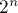. В то же время, на этом множестве представлений мы ввели разбиение на классы эквивалентности.
Например, пусть 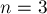, а дерево таково: корень — вершина 1, а вершины 2 и 3 — её сыновья. Тогда следующие функции 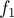 и  считаются эквивалентными:
считаются эквивалентными:
![\matrix{
f_1(1)=0 & f_2(1)=0 \cr
f_1(2)=1 & f_2[...]](../tex2png/cache/0be5ed7e2df25a4a794d41cfb527e699.png)
Инвариантные перестановки
Почему эти две функции и принадлежат одному классу эквивалентности? Интуитивно это понятно — потому что мы можем переставить местами сыновей вершины 1, т.е. вершины 2 и 3, а после такого преобразования функции и совпадут. Но формально это означает, что найдётся такая инвариантная перестановка  (т.е. которая по условию задачи не меняет сам объект, а только его представление), такая, что:
(т.е. которая по условию задачи не меняет сам объект, а только его представление), такая, что:
Итак, исходя из условия задачи, мы можем найти все инвариантные перестановки, т.е. применяя которые мы не не переходим из одного класса эквивалентности в другой. Тогда, чтобы проверить, являются ли две функции и эквивалентными (т.е. соответствуют ли они на самом деле одному объекту), надо для каждой инвариантной перестановки проверить, не выполнится ли условие: (или, что то же самое, ). Если хотя бы для одной перестановки обнаружилось это равенство, то и эквивалентны, иначе они не эквивалентны.
Нахождение всех таких инвариантных перестановок, относительно которых наша задача инвариантна — это ключевой шаг для применения как леммы Бернсайда, так и теоремы Пойа. Понятно, что эти инвариантные перестановки зависят от конкретной задачи, и их нахождение — процесс чисто эвристический, основанный на интуитивных соображениях. Впрочем, в большинстве случаев достаточно вручную найти несколько "основных" перестановок, из которых все остальные перестановки могут быть получены их всевозможными произведениями (и эту, исключительно механическую, часть работы можно переложить на компьютер; более подробно это будет рассмотрено ниже на примере конкретной задачи).
Нетрудно понять, что инвариантные перестановки образуют группу — поскольку произведение любых инвариантных перестановок тоже является инвариантной перестановкой. Обозначим группу инвариантных перестановок через  .
.
Формулировка леммы
Для формулировки осталось напомнить одно понятие из алгебры. Неподвижной точкой  для перестановки называется такой элемент, который инвариантен относительно этой перестановки: . Например, в нашем примере неподвижными точками будут являться те функции , которые соответствуют раскраскам, не меняющимся при применении к ним перестановки (не меняющимся именно в формальном смысле равенства двух функций). Обозначим через количество неподвижных точек для перестановки .
для перестановки называется такой элемент, который инвариантен относительно этой перестановки: . Например, в нашем примере неподвижными точками будут являться те функции , которые соответствуют раскраскам, не меняющимся при применении к ним перестановки (не меняющимся именно в формальном смысле равенства двух функций). Обозначим через количество неподвижных точек для перестановки .
Тогда лемма Бернсайда звучит следующим образом: количество классов эквивалетности равно сумме количеств неподвижных точек по всем перестановкам из группы , делённой на размер этой группы:
Хотя лемма Бернсайда сама по себе не так удобна для применения на практике (пока непонятно, как быстро искать величину ), она наиболее ясно раскрывает математическую суть, на которой основана идея подсчёта классов эквивалентности.
Доказательство леммы Бернсайда
Описанное здесь доказательство леммы Бернсайда не так важно для её понимания и применения на практике, поэтому его можно пропустить при первом чтении.
Приведённое здесь доказательство является самым простым из известных и не использует теорию групп. Это доказательство было опубликовано Богартом (Bogart) и Кеннетом (Kenneth) в 1991 г.
Итак, нам нужно доказать следующее утверждение:
Величина, стоящая справа — это не что иное, как количество "инвариантных пар" , т.е. таких пар, что . Очевидно, что в формуле мы имеем право изменить порядок суммирования - сделать внешнюю сумму по элементам f, а внутри неё поставить величину — количество перестановок, относительно которых f инвариантна:
Для доказательства этой формулы составим таблицу, столбцы которой будут подписаны всеми значениями  , строки — всеми перестановками , а в клетках таблицы будут стоять произведения . Тогда, если мы будем рассматривать столбцы этой таблицы как множества, то некоторые из них могут совпасть, и это будет как означать, что соответствующие этим столбцам также эквивалентны. Таким образом, количество различных как множество столбцов равно искомой величине . Кстати говоря, с точки зрения теории групп столбец таблицы, подписанный некоторым элементом — это орбита этого элемента; для эквивалентных элементов, очевидно, орбиты совпадают, и число различных орбит даёт именно .
, строки — всеми перестановками , а в клетках таблицы будут стоять произведения . Тогда, если мы будем рассматривать столбцы этой таблицы как множества, то некоторые из них могут совпасть, и это будет как означать, что соответствующие этим столбцам также эквивалентны. Таким образом, количество различных как множество столбцов равно искомой величине . Кстати говоря, с точки зрения теории групп столбец таблицы, подписанный некоторым элементом — это орбита этого элемента; для эквивалентных элементов, очевидно, орбиты совпадают, и число различных орбит даёт именно .
Итак, столбцы таблицы сами распадаются на классы эквивалентности; зафиксируем теперь какой-либо класс и рассмотрим столбцы в нём. Во-первых, заметим, что в этих столбцах могут стоять только элементы одного класса эквивалентности (иначе получилось бы, что некоторым эквивалентным преобразованием мы перешли в другой класс эквивалентности, что невозможно). Во-вторых, каждый элемент будет встречаться одинаковое число раз во всех столбцах (это также следует из того, что столбцы соответствуют эквивалентным элементам). Отсюда можно сделать вывод, что все столбцы внутри одного класса эквивалентности совпадают друг с другом как мультимножества.
Теперь зафиксируем произвольный элемент . С одной стороны, он встречается в своём столбце ровно раз (по самому определению ). С другой стороны, все столбцы внутри одного класса эквивалентности одинаковы как мультимножества. Следовательно, внутри каждого столбца данного класса эквивалентности любой элемент  встречается ровно раз.
встречается ровно раз.
Таким образом, если мы возьмём произвольным образом от каждого класса эквивалентности по одному столбцу и просуммируем количество элементов в них, то получим, с одной стороны,  (это получается, просто умножив количество столбцов на их размер), а с другой стороны — сумму величин по всем (это следует из всех предыдущих рассуждений):
(это получается, просто умножив количество столбцов на их размер), а с другой стороны — сумму величин по всем (это следует из всех предыдущих рассуждений):
что и требовалось доказать.
Теорема Пойа. Простейший вариант
Теорема Пойа (Polya) является обобщением леммы Бернсайда, к тому же предоставляющая более удобный инструмент для нахождения количества классов эквивалентности. Следует отметить, что ещё до Пойа эта теорема была открыта и доказана Редфилдом (Redfield) в 1927 г., однако его публикация прошла незамеченной математиками того времени. Пойа независимо пришёл к тому же результату лишь в 1937 г., и его публикация была более удачной.
Здесь мы рассмотрим формулу, получающуюся как частный случай теоремы Пойа, и которую очень удобно использовать для вычислений на практике. Общая теорема Пойа в данной статье рассматриваться не будет.
Обозначим через количество циклов в перестановке . Тогда выполняется следующая формула (частный случай теоремы Пойа):
где  — количество значений, которые может принимать каждый элемент представления . Например, в нашей задаче-примере (раскраска корневого бинарного дерева в 2 цвета)
— количество значений, которые может принимать каждый элемент представления . Например, в нашей задаче-примере (раскраска корневого бинарного дерева в 2 цвета)  .
.
Доказательство
Эта формула является прямым следствием леммы Бернсайда. Чтобы получить её, нам надо просто найти явное выражение для величины , фигурирующую в лемме (напомним, это количество неподвижных точек перестановки ).
Итак, рассмотрим некоторую перестановку и некоторый элемент . Под действием перестановки элементы передвигаются, как известно, по циклам перестановки. Заметим, что так как в результате должно получаться , то внутри каждого цикла перестановки должны находиться одинаковые элементы . В то же время, для разных циклов никакой связи между значениями элементов не возникает. Таким образом, для каждого цикла перестановки мы выбираем по одному значению (среди вариантов), и тем самым мы получим все представления , инвариантные относительно этой перестановки, т.е.:
где — количество циклов перестановки.
Пример задачи: Ожерелья
Задача "ожерелья" — это одна из классических комбинаторных задач. Требуется посчитать количество различных ожерелий из бусинок, каждая из которых может быть покрашена в один из цветов. При сравнении двух ожерелий их можно поворачивать, но не переворачивать (т.е. разрешается сделать циклический сдвиг).
В этой задаче мы можем сразу найти группу инвариантных перестановок. Очевидно, она будет состоять из перестановок:
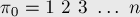
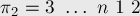
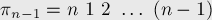
Найдём явную формулу для вычисления  . Во-первых, заметим, что перестановки имеют такой вид, что в
. Во-первых, заметим, что перестановки имеют такой вид, что в  -ой перестановке на
-ой перестановке на  -ой позиции стоит 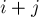 (взятое по модулю , если оно больше ). Если мы будем рассматривать циклическую структуру -ой перестановки, то увидим, что единица переходит в 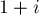, переходит в
-ой позиции стоит 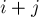 (взятое по модулю , если оно больше ). Если мы будем рассматривать циклическую структуру -ой перестановки, то увидим, что единица переходит в 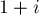, переходит в  , — в
, — в  , и т.д., пока не придём в число 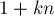; для остальных элементов выполняются похожие утверждения. Отсюда можно понять, что все циклы имеют одинаковую длину, равную 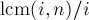, т.е.
, и т.д., пока не придём в число 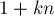; для остальных элементов выполняются похожие утверждения. Отсюда можно понять, что все циклы имеют одинаковую длину, равную 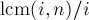, т.е.  ("gcd" — наибольший общий делитель, "lcm" — наименьшее общее кратное). Тогда количество циклов в -ой перестановке будет равно просто
("gcd" — наибольший общий делитель, "lcm" — наименьшее общее кратное). Тогда количество циклов в -ой перестановке будет равно просто  .
.
Подставляя найденные значения в теорему Пойа, получаем решение:
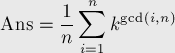
Можно оставить формулу в таком виде, а можно её свернуть ещё больше. Перейдём от суммы по всем к сумме только по делителям . Действительно, в нашей сумме будет много одинаковых слагаемых: если не является делителем , то таковой делитель найдётся после вычисления . Следовательно, для каждого делителя  его слагаемое
его слагаемое  учтётся несколько раз, т.е. сумму можно представить в таком виде:
учтётся несколько раз, т.е. сумму можно представить в таком виде:

где 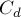 — это количество таких чисел , что 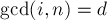. Найдём явное выражение для этого количества. Любое такое число имеет вид:  , где 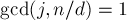 (иначе было бы
, где 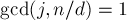 (иначе было бы  ). Вспоминая функцию Эйлера, мы находим, что количество таких — это величина функции Эйлера
). Вспоминая функцию Эйлера, мы находим, что количество таких — это величина функции Эйлера  . Таким образом,
. Таким образом,  , и окончательно получаем формулу:
, и окончательно получаем формулу:
![{\rm Ans} = \frac{1}{n} \sum_{d|n} \phi \left( \f[...]](../tex2png/cache/ad458f2bd2699770aebbace01f10d35d.png)
Применение леммы Бернсайда совместно с программными вычислениями
Далеко не всегда удаётся чисто аналитическим путём получить явную формулу для количества классов эквивалентности. Во многих задачах количество перестановок, входящих в группу, может быть слишком большим для ручных вычислений, и вычислить аналитически количество циклов в них не представляется возможным.
В таком случае следует вручную найти несколько "основных" перестановок, которых будет достаточно для порождения всей группы . Далее можно написать программу, которая сгенерирует все перестановки группы , посчитает в каждой из них количество циклов и подставит их в формулу.
Рассмотрим для примера задачу о количестве раскрасок тора. Имеется прямоугольный клетчатый лист бумаги 
 , некоторые из клеток покрашены в чёрный цвет. Затем из этого листа получают цилиндр, склеивая две стороны с длинами
, некоторые из клеток покрашены в чёрный цвет. Затем из этого листа получают цилиндр, склеивая две стороны с длинами  . Затем из цилиндра получают тор, склеивая две окружности (базы цилиндра) без перекручивания. Требуется посчитать количество различных торов (лист был изначально покрашен произвольно), считая, что линии склеивания неразличимы, а тор можно поворачивать и переворачивать.
. Затем из цилиндра получают тор, склеивая две окружности (базы цилиндра) без перекручивания. Требуется посчитать количество различных торов (лист был изначально покрашен произвольно), считая, что линии склеивания неразличимы, а тор можно поворачивать и переворачивать.
В данной задаче представлением можно считать лист бумаги , некоторые клетки которого покрашены в чёрный цвет. Нетрудно понять, что следующие виды преобразований сохраняют класс эквивалентности: циклический сдвиг строк листа, циклический сдвиг столбцов листа, поворот листа на 180 градусов; также интуитивно можно понять, что этих трёх видов преобразований достаточно для порождения всей группы инвариантных преобразований. Если мы каким-либо образом занумеруем клетки поля, то мы можем записать три перестановки 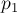, 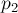,  , соответствующие этим видам преобразований. Дальше остаётся только сгенерировать все перестановки, получающиеся как произведения этой. Очевидно, что все такие перестановки имеют вид , где , ,
, соответствующие этим видам преобразований. Дальше остаётся только сгенерировать все перестановки, получающиеся как произведения этой. Очевидно, что все такие перестановки имеют вид , где , ,  .
.
Таким образом, мы можем написать реализацию решения этой задачи:
void mult (vector<int> & a, const vector<int> & b) { vector<int> aa (a); for (size_t i=0; i<a.size(); ++i) a[i] = aa[b[i]]; } int cnt_cycles (vector<int> a) { int res = 0; for (size_t i=0; i<a.size(); ++i) if (a[i] != -1) { ++res; for (size_t j=i; a[j]!=-1; ) { size_t nj = a[j]; a[j] = -1; j = nj; } } return res; } int main() { int n, m; cin >> n >> m; vector<int> p (n*m), p1 (n*m), p2 (n*m), p3 (n*m); for (int i=0; i<n*m; ++i) { p[i] = i; p1[i] = (i % n + 1) % n + i / n * n; p2[i] = (i / n + 1) % m * n + i % n; p3[i] = (m - 1 - i / n) * n + (n - 1 - i % n); } int sum = 0, cnt = 0; set < vector<int> > s; for (int i1=0; i1<n; ++i1) { for (int i2=0; i2<m; ++i2) { for (int i3=0; i3<2; ++i3) { if (!s.count(p)) { s.insert (p); ++cnt; sum += 1 << cnt_cycles(p); } mult (p, p3); } mult (p, p2); } mult (p, p1); } cout << sum / cnt; }